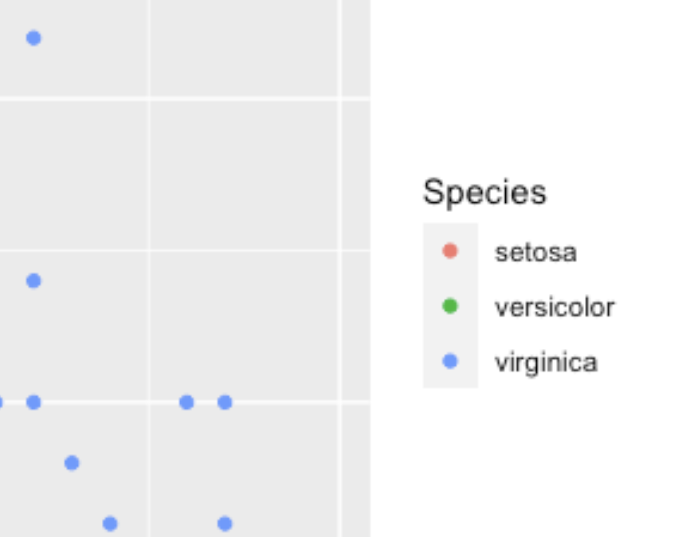

library(ggplot2)
plotObj <- iris |>
ggplot(aes(x = Sepal.Length, y = Sepal.Width, color = Species)) +
geom_point()
plotObj # 이미지 저장을 위한 코드
이번 글에서는 R 패키지 officer를 사용하여 PPT 프레젠테이션에 벡터 그래픽을 만드는 과정에 대해 소개합니다. officer를 포함하여 몇몇 패키지들이 officeverse라고 불리는 생태계를 구성하고 있으며 PPT외에도 엑셀이나 워드로 R의 결과를 만들어 낼 수 있습니다만, 이번 글에서는 벡터 그래픽을 저장하는 목적으로의 officer에 한정합니다.

위키피디아의 설명에 따르면, 벡터 그래픽스 (Vector Graphics)는 이미지를 보여줄 때 수학 방정식을 기반으로 점, 직선, 곡선 등의 물체를 활용하는 것을 의미합니다. (많이 쓰이는 Pixel 기반의 래스터 그래픽스의 대안이기도 합니다.)
예시처럼 벡터 그래픽스를 사용하면 이미지를 확대했을때 해상도가 망가지지 않거나, 이미지의 수정이 가능해진다는 장점이 있습니다.
library(ggplot2)
plotObj <- iris |>
ggplot(aes(x = Sepal.Length, y = Sepal.Width, color = Species)) +
geom_point()
plotObj # 이미지 저장을 위한 코드
위와 같은 코드로, 그림을 만들고 이를 외부로 저장하려는 상황을 생각해보겠습니다.
이를 위해 일반적으로 우리가 할 수 있는 것은 Rstudio의 Plot (혹은 View)에서 이미지를 저장하는 것입니다.


하지만, 이렇게 png형태로 이미지를 저장하고 나면, 확대를 했을때 꺠지거나, 다른 편집이 거의 불가능합니다.

그러나 officer를 통해 벡터 그래픽으로 이미지를 저장한다면, 다음 예시처럼 파워포인트를 통해 세밀한 편집이 가능합니다.

officer 패키지의 설치는 아래의 코드로 가능합니다.
officer로 벡터그래픽을 만드는 흐름은 크게 4가지 순서로 구성됩니다.
이제 각각의 내용을 소개하겠습니다.
pptx document with 0 slide(s)
Available layouts and their associated master(s) are:
layout master
1 Title Slide Office Theme
2 Title and Content Office Theme
3 Section Header Office Theme
4 Two Content Office Theme
5 Comparison Office Theme
6 Title Only Office Theme
7 Blank Office Themeread_pptx는 원래 ppt 파일을 R 오브젝트 형태로 읽기 위한 함수이지만, 만약 함수에 파일을 입력하지 않으면 새로운 ppt 오브젝트를 생성합니다.
한편 officer에는 read_pptx 외에도 read_docx(워드), read_xlsx(엑셀)도 존재합니다.
ppt 오브젝트를 콘솔에 입력하면, 몇개의 슬라이드로 구성되어있는지 확인할 수 있습니다. (layout과 master는 신경쓰지 않으셔도 좋습니다.)
처음 만든 ppt 오브젝트에는 pptx document with 0 slide(s), 즉 슬라이드가 없습니다.
이 오브젝트에 슬라이드를 추가하는 것은 add_slide()로 할 수 있습니다.
ppt |>
add_slide() # ppt <- ppt |> add_slide() 로 안해도 됨pptx document with 1 slide(s)
Available layouts and their associated master(s) are:
layout master
1 Title Slide Office Theme
2 Title and Content Office Theme
3 Section Header Office Theme
4 Two Content Office Theme
5 Comparison Office Theme
6 Title Only Office Theme
7 Blank Office Themeppt # pptx document with 1 slide(s)pptx document with 1 slide(s)
Available layouts and their associated master(s) are:
layout master
1 Title Slide Office Theme
2 Title and Content Office Theme
3 Section Header Office Theme
4 Two Content Office Theme
5 Comparison Office Theme
6 Title Only Office Theme
7 Blank Office Themeadd_slide()에는 layout과 master라는 옵션을 지정할 수 있고 가능한 값은 다음과 같습니다.
아마 눈치 채셨을 수도 있겠지만 레이아웃은 콘솔에서 ppt 오브젝트를 확인할 때 나오는 것들이며,
우리의 목적은 슬라이드 구성이 아닌 이미지 저장이기 때문에 어떤 값을 선택해도 동일한 결과를 얻을 수 있습니다.
아래의 이미지는 각 옵션들을 적용하여 만든 슬라이드의 결과물로 모두 동일한 것을 알 수 있습니다.

앞서 만든 ggplot의 결과를 ph_with이라는 함수로 슬라이드에 추가할 수 있습니다.
ppt |> ph_with( # paragraph의 ph가 아닐까 생각
dml(ggobj = plotObj), # 앞에서 만들었던 ggplot 이미지 오브젝트
location = ph_location_fullsize() # 쉬운 편집을 위해 이미지의 크기를 슬라이드에 가득 채움
)여기서 dml은 DrawingML이라는 오피스 프로덕트(pptx)에 XML로 이미지를 만들기 위한 내용입니다. location에는 다른 옵션도 있지만 ph_location_fullsize를 권장합니다
만약 여러개의 이미지를 여러장의 슬라이드로 집어넣어 만들고 싶다면 다음처럼 ph_with를 pipe (|>)로 이어서 사용 할 수 있습니다.
ppt |>
add_slide() |> # 1번째 슬라이드
ph_with(
dml(ggobj = plotObj),
location = ph_location_fullsize()
) |>
add_slide() |> # 2번째 슬라이드
ph_with(
dml(ggobj = plotObj2),
location = ph_location_fullsize()
) |>
add_slide() |> # 3번째 슬라이드
ph_with(
dml(ggobj = plotObj3),
location = ph_location_fullsize()
)마지막으로 add_slide와 ph_with를 통해 만든 슬라이드는 print로 현재 작업중인 디렉토리에 (getwd()로 확인) 저장할 수 있습니다.
이렇게 만들어진 pptx는 파워포인트와 키노트, 그리고 구글 슬라이드에서 작업할 수 있습니다.
위 4개의 단계를 1개의 코드로 연결하면 다음과 같습니다.
library(officer)
library(rvg)
library(ggplot2)
# 이미지 생성
plotObj <- iris |>
ggplot(aes(x = Sepal.Length, y = Sepal.Width, color = Species)) +
geom_point()
# ppt
read_pptx() |> # ppt 생성, 별도의 오브젝트로 저장하지 않아도 됨.
add_slide() |> # 슬라이드 추가
ph_with( # 이미지 추가
dml(ggobj = plotObj),
location = ph_location_fullsize()
) |>
print('image.pptx') # ppt 저장 한편, officer를 활용하여 더 자세한 ppt 생성과 편집도 가능하지만, 이 글에서는 다루지 않으며 quarto를 활용한 revealjs 슬라이드 생성하는 방법을 링크로 대신 첨부해드립니다.
@online{kim2023,
author = {Kim, Jinhwan},
title = {R의 Officer {패키지를} {활용하여} {PPT} {편집을} {위한}
{벡터} {그래픽스} {만들기}},
pages = {undefined},
date = {2023-07-01},
url = {https://blog.zarathu.com/posts/2023-07-01-officer},
langid = {en}
}